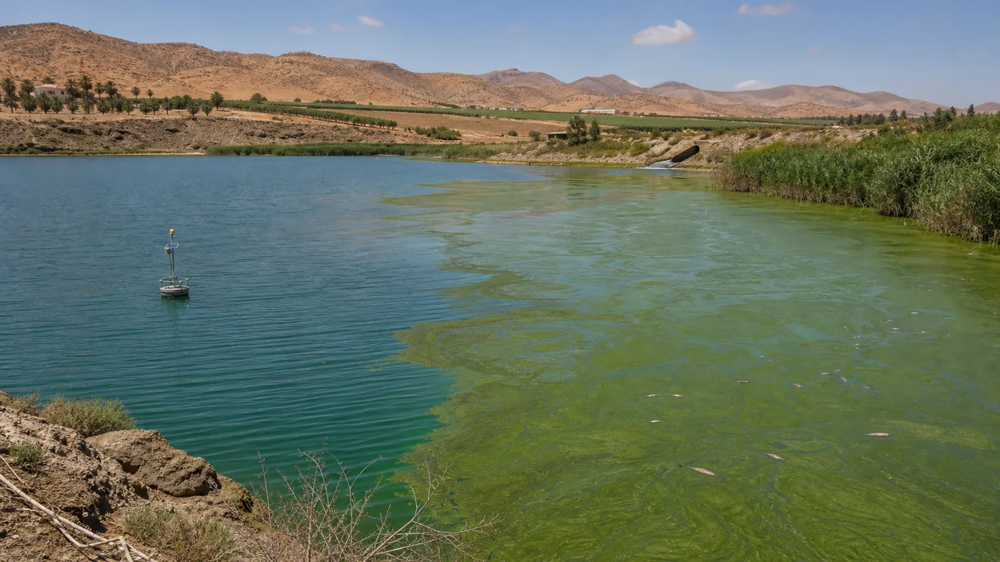

Réservoir instrumentéImage réelle + modèle causalPrêt  Sonde O₂ dissous— mg/L Plancton— Petits poissons— Prédateur— Oiseau— Bande végétalisée Zone humide Traitement des eaux Choisis une hypothèse, puis modifie une variable. Chlorophylle a— µg/L O₂ dissous— mg/L Survie poissons— % DBO— mg/L